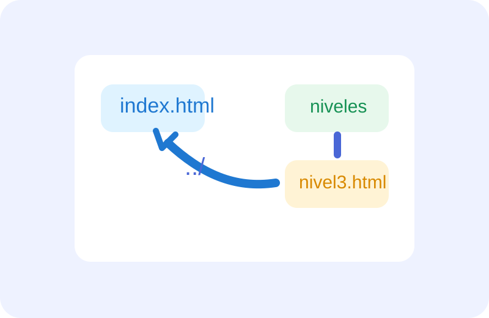

Último tramo del camino. En este nivel aparece algo muy usado al conectar páginas entre carpetas.
Si un archivo está dentro de la carpeta niveles y querés volver a index.html, necesitás subir un nivel en la ruta.
Pregunta:
¿Qué enlace relativo está bien escrito para volver desde niveles/nivel3.html hacia index.html?